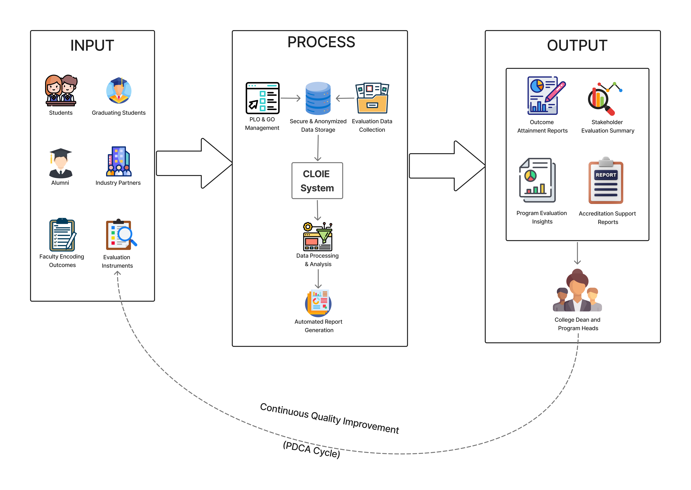

1.1 Background of the Study
Computerization has become central to higher-education quality work because digital systems improve how institutions gather, organize, and interpret assessment evidence for decision-making and program improvement (Marinoni et al., 2020; UNESCO, 2026).
The pressure to monitor outcomes more systematically is also tied to accreditation and standards-based review, where institutions are expected to present clear evidence of attainment and continuous improvement (ABET, 2024; UNESCO, 2026). This centralized approach is already reflected in implementation examples such as Penn State's Nuventive environment for outcomes documentation and reporting (Penn State Office of Planning, Assessment, and Institutional Research, 2024).
Within the local project context, Assumption College of Davao still needs a dedicated, centralized mechanism for structured outcomes monitoring, even as quality documentation demands continue to grow. This need is reinforced by the Region XI higher-education landscape, where many institutions operate under increasingly data-driven monitoring expectations (Commission on Higher Education Regional Office XI, 2024).
Beyond compliance, curriculum decisions must stay responsive to industry shifts. Labor-market signals indicate that required workforce skills are changing rapidly, making recurring outcomes review and stakeholder feedback more important for academic relevance (World Economic Forum, 2023).
In response, CLOIE is positioned as a centralized evaluation platform that consolidates stakeholder evidence, supports outcome tracking, and generates reporting inputs for quality assurance and continuous improvement.
Key Insight
CLOIE is justified not only by accreditation requirements, but by the broader need for a practical, data-supported mechanism to identify outcome gaps before they become program-level quality issues.
1.2 Objectives of the Study
This section defines the study's general objective and the specific implementation goals of the proposed CLOIE platform.
General Objective
Develop the System for Comprehensive Learning Outcomes and Instructional Evaluation (CLOIE) to support systematic monitoring and evaluation of Program Learning Outcomes (PLOs) and Graduate Outcomes (GOs) through stakeholder-based feedback, structured data management, and automated reporting for quality assurance and continuous improvement.
Specific Objectives
- Enable encoding and management of PLOs and GOs per program.
- Integrate required evaluation tools for students, graduates/alumni, and industry partners.
- Generate consolidated outcome-attainment reports for evaluation and accreditation support.
- Ensure confidential and anonymized data handling aligned with continuous improvement.
1.3 Significance of the Study
CLOIE is expected to support different academic stakeholders by centralizing evidence and improving the quality of program-level evaluation workflows.
Assumption College of Davao
Supports a more centralized and organized approach to outcomes monitoring and accreditation-related preparation.
College Dean and Program Heads
Provides consolidated summaries that help identify gaps, review attainment, and guide academic planning.
Faculty Members
Improves visibility of outcome results for reflection, course alignment, and instructional improvement.
Students and Graduating Students
Benefits from programs that are evaluated more systematically for relevance and readiness.
Alumni and Industry Partners
Creates a structured channel to contribute evidence on employability, competencies, and workplace fit.
Future Researchers
Serves as a reference model for developing educational evaluation and outcomes-assessment systems.
1.4 Scope and Delimitation
The chapter separates what CLOIE is designed to cover from what it deliberately excludes, keeping the proposal focused and implementable.
1.4.1 Scope (Included)
- PLO and GO management by authorized academic users
- Stakeholder-based evaluation across students, graduating students, alumni, and industry
- Outcome evaluation and digital response collection
- Outcome attainment analysis and report generation
- Support for continuous quality improvement workflows
- Confidential and anonymized data handling in aggregated form
1.4.2 Delimitation (Excluded)
- No student grading computation or storage
- Not a Learning Management System (LMS)
- Not a Student Information System (SIS)
- No individual student performance tracking
- Not a replacement for full institutional accreditation systems
- Limited to evaluation, monitoring, and reporting functions
1.5 Time and Place of the Study
The study is situated at Assumption College of Davao and follows the capstone development window from March 2026 to September 2026, covering analysis, design, development, testing, and documentation in coordination with relevant academic personnel.
Place: Assumption College of Davao
Duration: March 2026 to September 2026
Context: Capstone development period
1.6 Operational Definition of Terms
The chapter defines core concepts used throughout CLOIE's proposed evaluation workflow.
Accreditation
Formal quality evaluation requiring evidence of outcome attainment and continuous improvement.
Alumni Evaluation
Graduate feedback on how academic preparation aligns with professional experience.
CILO Evaluation Tool
Instrument for collecting student feedback on course outcomes and instructional effectiveness.
CLOIE
Proposed system for outcomes monitoring, stakeholder evaluation, and automated reporting.
Continuous Quality Improvement (CQI)
Ongoing review-and-improve process supported by evaluation evidence.
Graduate Outcomes (GOs)
Program-level competencies expected from graduates.
Graduating Student Exit Survey
Instrument gathering pre-graduation feedback on outcomes and program experience.
Industry Internship Evaluation
Employer-side evaluation of student readiness, competencies, and professional skills.
Outcome Attainment
Measured level at which program outcomes are achieved based on aggregated evidence.
Outcome-Based Education (OBE)
Framework centered on clearly defined and measurable learning outcomes.
Plan-Do-Check-Act (PDCA)
Iterative quality cycle used to guide evidence-based improvement actions.
Program Learning Outcomes (PLOs)
Expected knowledge, skills, and competencies upon program completion.
Stakeholder-Based Evaluation
Evaluation approach integrating inputs from multiple respondent groups.
System User
Authorized participant who encodes, submits, reviews, or interprets CLOIE data.
1.7 Conceptual Framework
The conceptual framework follows an Input-Process-Output (IPO) model integrated with a PDCA feedback loop, showing how stakeholder evidence is transformed into decision-ready reports and improvement actions.
Input
Evaluation data from students, graduating students, alumni, and industry, plus encoded PLOs and GOs from faculty and academic units.
Process
CLOIE manages outcomes, collects responses, secures anonymized data, and computes attainment through basic statistical processing.
Output
Outcome-attainment reports, stakeholder summaries, and program insights used by deans, heads, and faculty for review and action planning.

Figure 1. Conceptual Framework (IPO model with PDCA-informed continuous quality improvement loop).